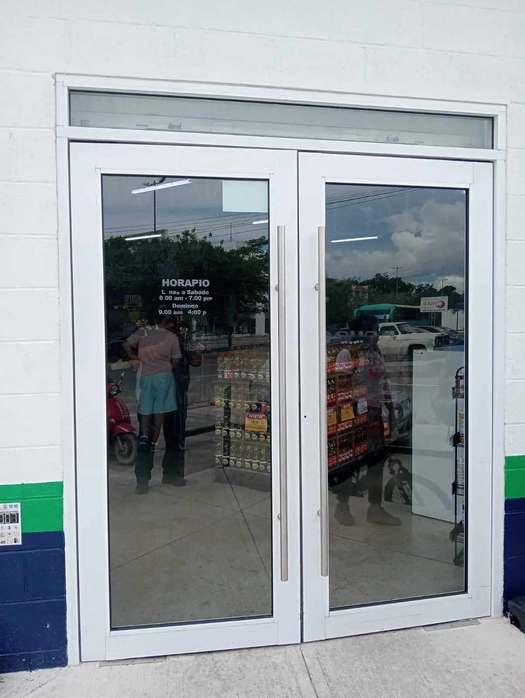

Obra civil, instalaciones y acabados para unidades médicas en Puerto Aventuras, construidos contra el programa de áreas que exige la normatividad sanitaria — no al revés.

Puerto Aventuras demanda un tipo de unidad muy específico: atención de urgencias y consulta general para una comunidad residencial cerrada con población extranjera y de retiro, además de servicio a la marina y a la hotelería del tramo. No son hospitales: son clínicas pequeñas, bien equipadas, que resuelven lo inmediato y derivan lo complejo a Playa del Carmen.
Nuestro contrato cubre la parte constructiva: albañilería, instalaciones, climatización y filtración, acabados de superficie continua con zoclo sanitario, puertas de paso libre, lavabos de accionamiento no manual, cuarto de RPBI y las preparaciones para el equipo médico. La red de gases medicinales, el blindaje de las salas de rayos X y el trámite sanitario los lleva un especialista certificado; el programa de obra se arma con sus tiempos de prueba dentro, no después.
Sanitaria: aviso o licencia, responsable sanitario, manejo de RPBI y, en su caso, seguridad radiológica. Municipal: uso de suelo compatible con el giro salud, licencia de construcción, DRO y número oficial. Protección Civil: salidas, anchos, iluminación de emergencia, señalización, extintores y un plan que funcione con pacientes que no pueden evacuar por su cuenta. Las tres se atienden en paralelo desde el primer mes; dejar Protección Civil para el final es lo que más veces retrasa una apertura.
| Concepto | Incluye | Costo 2026 |
|---|---|---|
| Consultorio y clínica de consulta | Obra civil, instalaciones, acabados lavables | $14,000 MXN – $25,000 MXN / m² |
| Clínica dental | Succión, aire comprimido, agua tratada, acabados sin juntas | $21,000 MXN – $39,000 MXN / m² |
| Clínica con área de procedimientos y CEYE | Circulación sucio-limpio, esterilización | $26,000 MXN – $46,000 MXN / m² |
| Cirugía ambulatoria con quirófano | Área blanca, gases medicinales, recuperación | $41,000 MXN – $77,000 MXN / m² |
| Blindaje radiológico | Por sala: diseño, colocación y memoria | $154,000 MXN – $515,000 MXN |
| Red de gases medicinales | Tendido, alarmas, pruebas y certificación | $309,000 MXN – $1,236,000 MXN |
| Planta de emergencia con transferencia automática | Clínica pequeña | $206,000 MXN – $515,000 MXN |
Rangos de obra civil, instalaciones y acabados para uso médico, sin equipo médico. Las partidas que más mueven el total son la climatización con filtración, los acabados de superficie continua y las instalaciones especiales; el blindaje y los gases medicinales se cotizan por separado porque los ejecuta un especialista certificado.
Piso de superficie continua —vinílico en rollo termosellado o resina— con zoclo sanitario redondeado; muros con recubrimiento lavable y resistente a desinfectantes; plafón sellado en áreas críticas; sin repisas abiertas en salas de procedimientos. Lavabo con llave de accionamiento no manual en cada área clínica, puertas con paso libre suficiente para camilla y silla de ruedas, y climatización con la filtración y el régimen de presión que exija el área. El acabado comercial común no cumple y, más importante, no funciona clínicamente.
Al pertenecer a Solidaridad, el trámite municipal es el mismo que en Playa del Carmen, pero la obra se ejecuta dentro de un fraccionamiento con acceso controlado, horarios de trabajo restringidos, registro de personal y, normalmente, aprobación del comité interno. El plan de obra se arma alrededor de esas ventanas desde el primer día.
Un consultorio o clínica de consulta toma de 10 a 16 semanas de obra. Una clínica dental con varias unidades, de 12 a 20. Una unidad con área de procedimientos y esterilización, de 4 a 7 meses. Cirugía ambulatoria con quirófano, de 6 a 12. A eso se suma el trámite regulatorio, que con frecuencia es más largo que la obra y por eso arranca primero. El otro cuello de botella son los equipos: imagenología, autoclaves y unidades dentales tienen plazos de entrega largos y el cuarto se construye para el modelo específico.
Guías útiles: Hospitales y clínicas en toda la Riviera Maya · Construcción comercial y de oficinas · Permisos y licencias · Supervisión de obra
196+ proyectos terminados. Contrato a precio fijo. Respuesta en 2 minutos.
Cotizar por WhatsApp